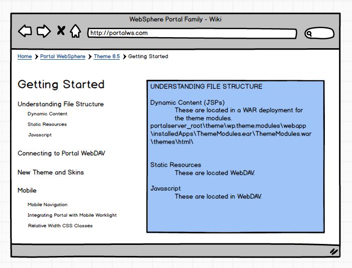

User Agent Switcher, color analyzer for accessibility

Currently Delivering
//currently: working on a search bar to delineate the links better
Search bar
implementing site responsively in ipad
vm stuff
I've worked in a couple different types of environments. Here's what I bring to the table.
I've worked in large corporate environments and am comfortable in the environment as well as interfacing customer needs with the abilities of the corporate side of business.
Having a few years in retail has made me very conscientious of goal-driven sales and the teamwork it requires to achieve my goals. It has also given me behind the scenes support and see what it takes to drive an major retail operation.
I believe communication is key in a variety of situations, especially at the workplace. I've always found the people I work with the most rewarding part of every job I've had, and believe that together we can accomplish more in less time and with more vision.
Roles I have held include Resident Advisor, animal shelter coordinator, Student Government President, robotics presenter and cheerleader. A lot of my activities have slowly taken a backseat in college, but one of my strongest suits is bringing people together and having a good time.